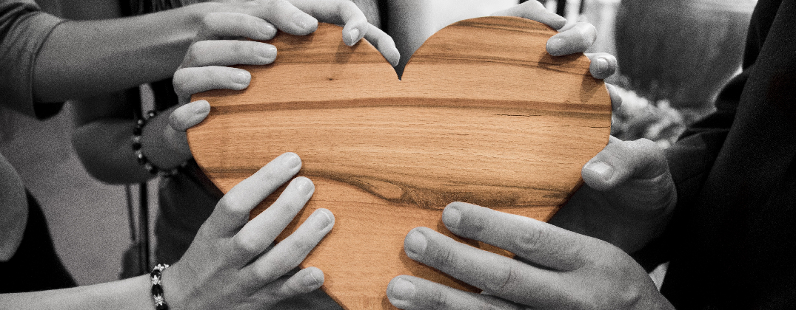

KotiApu
KotiApu
Utunmäentie 1B 33, 45160 Kouvola
Vastaavan työntekijän tavoittaa
puh. 040 687 2209
Vanhan Kouvolan alueen korttelikodeilla toimii KotiApu –palvelu. Palvelu on tarkoitettu ensisijaisesti vähävaraisille vanhuksille, mutta myös muille henkilöille, joilla syystä tai toisesta on vaikeuksia selviytyä arjen askareistaan. KotiApu –palvelu räätälöidään jokaiselle asiakkaalle sopivaksi.
KotiApu pitää sisällään esim. apua kaupassa käymiseen, kaverin ulkoiluun, tukea lääkärikäynteihin, lehdenluku apua, kevyttä siivousapua asiakkaan omilla välineillä tai vaikkapa vain juttuseuraa.
Ota yhteyttä, tutustutaan ja sovitaan juuri Sinulle sopivasta palvelusta!
Veloitamme palveluistamme yksilöllisesti sovittavan, yhdistyksen toimintaa tukevan maksun.